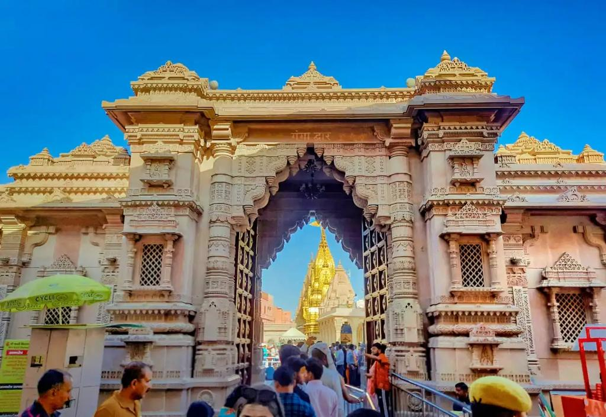
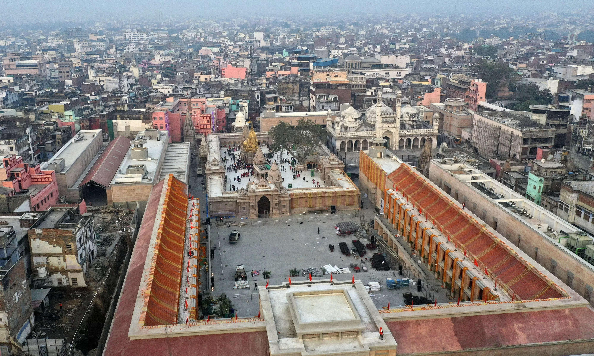
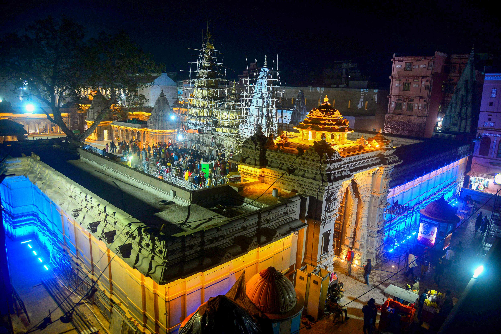
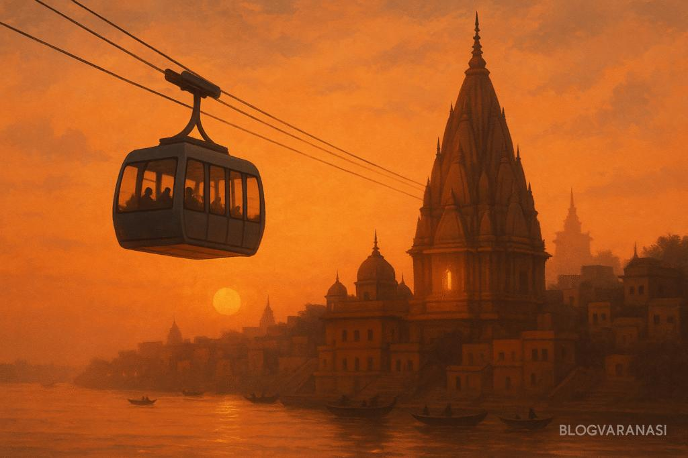
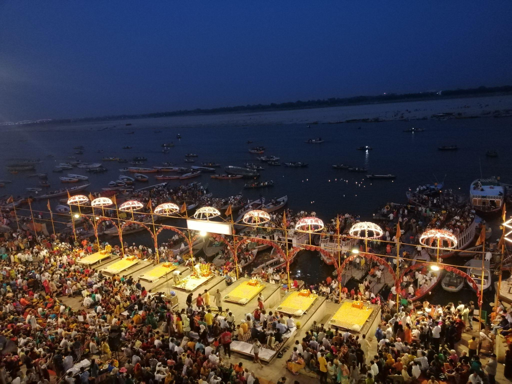
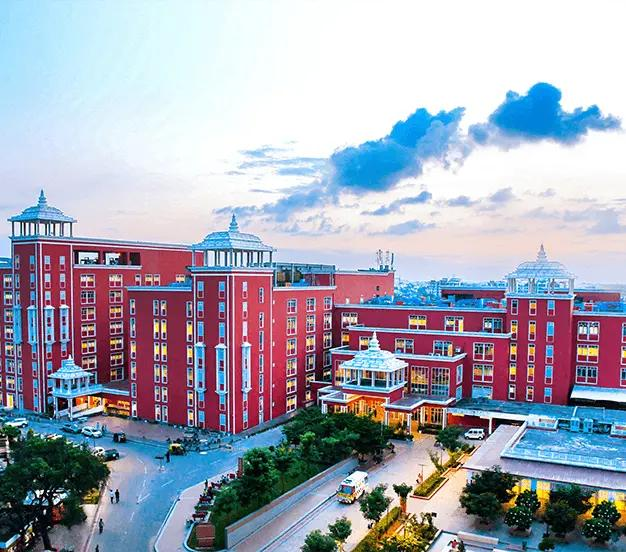
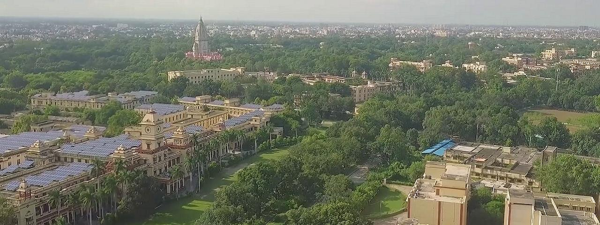

Varanasi (Kashi), one of the world's oldest living cities, is undergoing a profound transformation—not as a typical urban upgrade, but as a civilizational restoration supported by modern infrastructure. Over the past few years, the city has emerged as a global model of "Heritage-Led Development", where spiritual significance and 21st-century systems coexist seamlessly.
For the diaspora in Metro Detroit, this transformation is best understood not just through numbers, but through how it is restoring Kashi's original sacred geography while preparing it for the future.
💰 The Economic Powerhouse
Varanasi's economy is no longer just local; it is a primary driver of the state's tourism and services sector.
Tourism Surge: In 2025, Varanasi recorded a record-breaking 72.6 Million visitors.
Context: This is more than 100 times the population of the city of Detroit visiting Varanasi in a single year.
This scale of tourism has transformed the local economy—driving growth in hospitality, transport, retail, and traditional crafts. For perspective, this is many times the population of Metro Detroit visiting a single city each year, making Varanasi a major global destination for spiritual and cultural tourism.
- Infrastructure Investment: Under the Smart City Mission and regional development plans, over $1.5 Billion (₹12,000+ Crore) has been infused into the city's core infrastructure over the last few years.
- Real Estate Appreciation: Property values in the "Temple Zone" and along the Ring Road have seen an appreciation of 40–60% due to improved accessibility and the Kashi Vishwanath Corridor impact.
Restoring the Spiritual Core of Kashi

The centerpiece of Varanasi's transformation is the Kashi Vishwanath Corridor, a project of immense spiritual and cultural significance.
For the first time in centuries, devotees can move seamlessly from the Ganga ghats to the temple, recreating the sacred flow that defined Kashi in ancient times. The expanded परिसर (temple complex) now accommodates lakhs of pilgrims daily, eliminating the earlier congestion of narrow गलियाँ while preserving their heritage character.

This is not just redevelopment—it is the reclaiming of Kashi's original spiritual design, ensuring that the city can welcome the world without losing its soul.

🚠 Transportation: A "City of Firsts"
Varanasi is pioneering urban transit solutions that are being watched by the entire world.

- The Varanasi Ropeway (India's First): Expected to be fully operational by May 2026, this 2.33-mile (3.75 km) aerial cable car system connects the Cantonment Railway Station to Godowlia Chowk.
- Cost: ~$77 Million (₹645 Crore)
- Capacity: It can transport 3,000 passengers per hour per direction, bypassing the congested 45-minute street crawl in just 16 minutes
- Ring Road Phase-2: The completion of the full 47-mile (76 km) outer ring road has successfully diverted heavy truck traffic away from the city center, reducing inner-city CO2 levels significantly. This encircles the city like I-275/I-696 around Detroit.
- Airport Expansion: Lal Bahadur Shastri International Airport is undergoing a $345 Million expansion to include a new terminal and a runway extension that will allow larger wide-body aircraft (like those used for international flights from the US/Europe) to land directly.
- Railway Modernization: Major stations such as Varanasi Junction and Banaras railway station are being redeveloped with modern, airport-like passenger facilities.
Together, these upgrades are making Varanasi easier to reach, easier to navigate, and far more visitor-friendly.
🏙️ Smart City with a Human Touch

Under India's Smart City Mission, Varanasi has integrated technology into everyday urban life:
- A Digital Twin of the city enables advanced planning for festivals, traffic, and emergency response. The entire Nagar Nigam area has been mapped in 3D, allowing city planners to simulate crowd control (vital for festivals), solid waste management, and even crime monitoring using AI.
- A centralized Command & Control Center (ICCC) monitors city operations in real time, with over 3,000 CCTV cameras managing smart traffic lights across the city.
- All major ghats now feature improved lighting, sanitation, and signage. The "Namo Ghat" (the city's first half-moon-shaped ghat) provides a massive 21,000 square feet of public space with a floating CNG station for boats.
- Large-scale programs like Namami Gange have strengthened sewage treatment and river cleanliness—ensuring that development enhances, rather than harms, the sacred Ganga.
Healthcare, Education, and Regional Impact

Varanasi's growth is not limited to tourism—it is emerging as a regional hub for healthcare and education:
- Expansion of BHU's Institute of Medical Sciences and new specialty hospitals is improving access to advanced care across Eastern Uttar Pradesh and neighboring states.
- Sarnath continues to attract global Buddhist pilgrims, strengthening Varanasi's international cultural relevance.
- The city remains a center for classical music, Sanskrit learning, and dharmic scholarship, preserving its intellectual heritage alongside modern growth.

This makes Varanasi not just a destination—but a service and knowledge hub for tens of millions of people.
🚢 The Logistics Revolution
Varanasi is also playing a growing role in India's logistics network:
- The Multi-Modal Terminal at Ramnagar (on the Ganga) has seen a 25% increase in cargo handling over the last two years. It now serves as a key hub for the National Waterway-1, connecting Varanasi to the Port of Haldia (Kolkata).
- The Eastern Dedicated Freight Corridor (EDFC), which passes through the outskirts, is now fully operational, cutting freight transit time to Delhi and Mumbai by nearly 50%.
These developments position Varanasi as a key node in both river-based and rail-based trade corridors, supporting long-term economic growth.
📊 Summary for the Diaspora
| Project / Metric | Statistical Detail (2025-26) | Detroit-Relative Context |
|---|---|---|
| Annual Tourists | 72.6 Million | ~15x the population of Metro Detroit |
| Urban Ropeway | 2.33 Miles (Operational 2026) | First of its kind in India |
| Kashi Vishwanath Corridor | 5.4 Lakh Sq. Feet Area | A massive pedestrian plaza for 100k+ people |
| Ring Road Length | 47 Miles | Encircles the city like I-275 / I-696 |
| Noida-Varanasi HSR | In planning / pre-construction | Future "Bullet Train" connecting to Delhi |
Varanasi's transformation is not about turning an ancient city into a modern one. It is about strengthening an eternal city with modern capability—where spiritual heritage is restored, not replaced; where infrastructure supports संस्कृति, not overwhelms it; where development enhances dharma, rather than diluting it.
The Bigger Picture
For the global Indian diaspora, Varanasi today stands as a powerful example of how tradition and progress can move forward together—confidently, authentically, and at scale.
These updates demonstrate that Varanasi is successfully balancing its status as the world's oldest living city with the infrastructure requirements of a 21st-century economic hub.